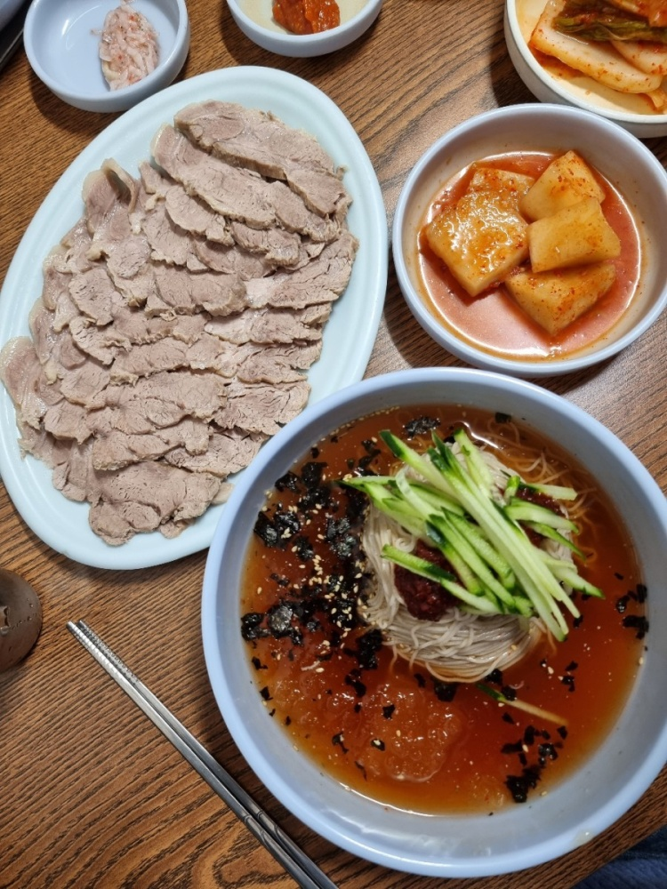
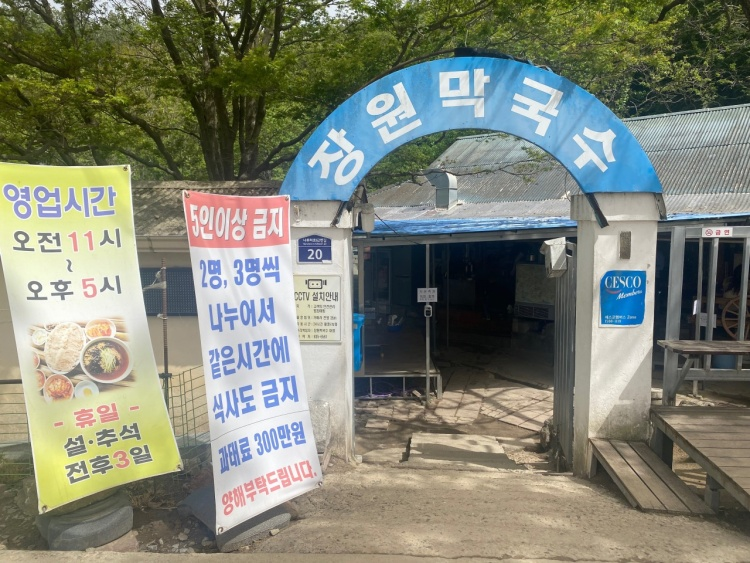
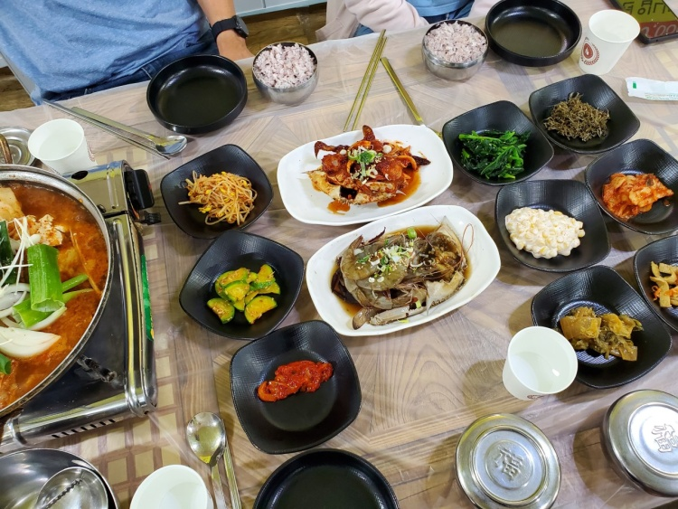
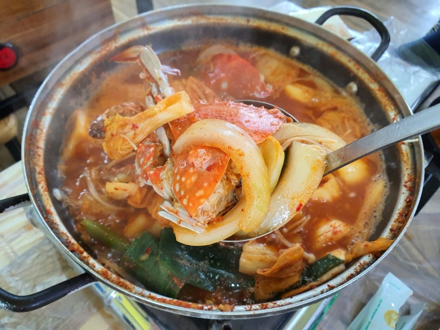
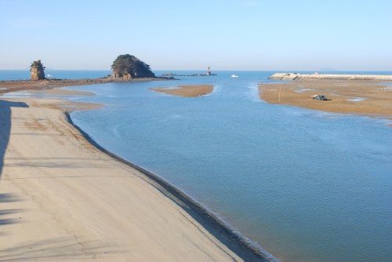
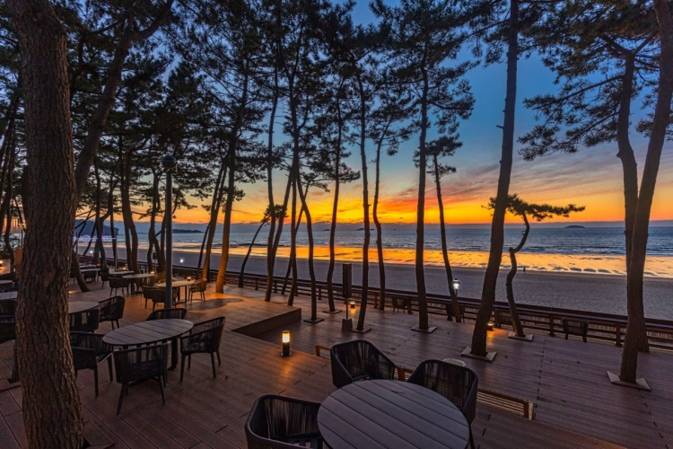
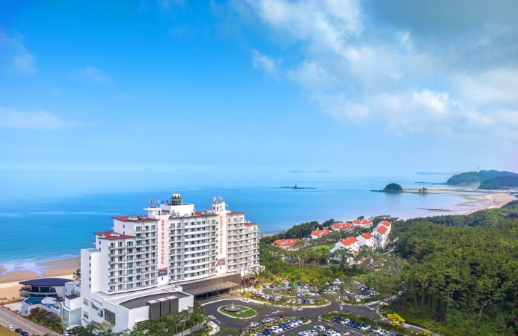
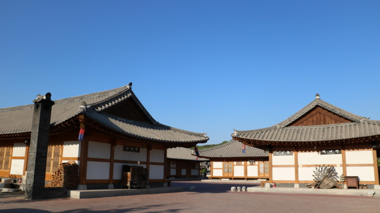
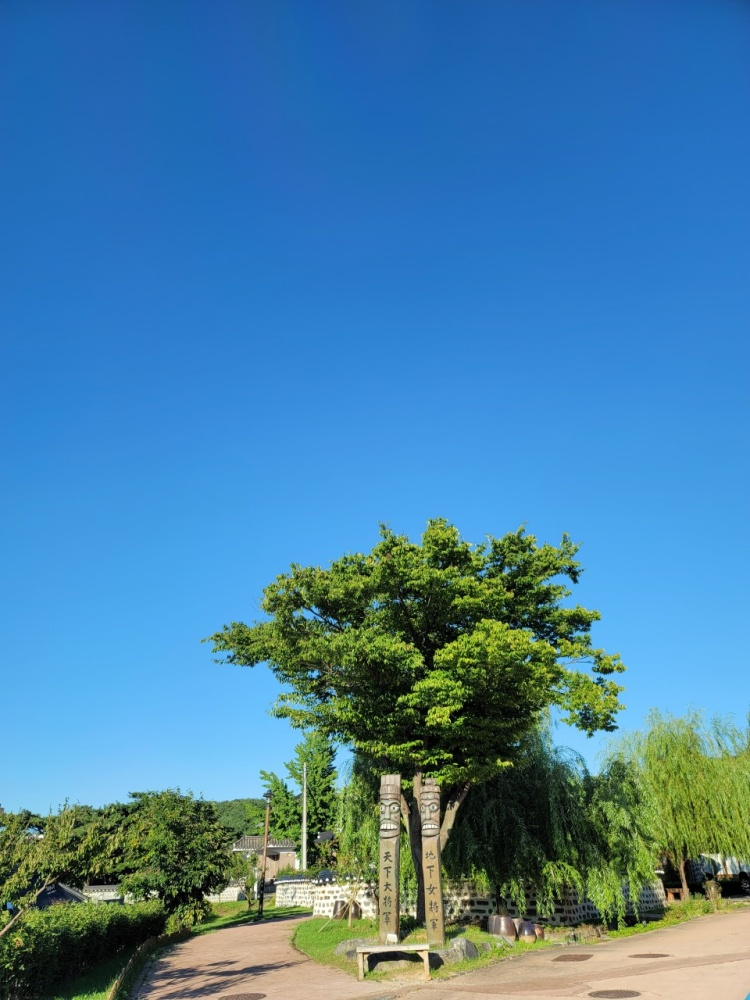

전국 어느 지역으로든 갈 수 있는 교통망을 갖추고 있으며, 서울 까지는 1시간 부산 목포 까지는 3시간대의 위치에 있습니다.
Food
장원막국수
 ⭐️⭐️⭐️
충청남도 부여군 부여읍에 위치한 장원 막국수입니다.
시골집을 개조하여 만든 소박한 분위기와 새콤달콤한 육수와 뽑아내는 메밀 국수면에 살얼음을 띄워낸 막국수가 대표 메뉴입니다.
영업시간
매일 11:00 - 17:00
꽃지꽃게집
 ⭐️⭐️⭐️⭐️
충남 태안군 안면읍에 위치한 꽃지꽃게집 입니다.
신선한 재료를 사용하여 싱싱함은 물론 먹는 즐거움도 보여줍니다! 다양한 맛으로 굴+게로 만든 굴 게 탕을 선보여 차별화를 두었습니다.
View
꽃지해수욕장
⭐️⭐️⭐️⭐️⭐️
충청남도 태안군 안면읍에 위치한 해수욕장입니다.
안면도에서 가장 큰 해수욕장입니다. 넓은 백사장과 완만한 수심, 말고 깨끗한 바닷물, 알맞은 수온으로 해마다 많은 피서객들이 붐비는 곳입니다.
물이 빠지면 갯바위가 드러나 조개,고둥,게 등을 잡을수 있습니다!
아일랜드 리솜
 ⭐️⭐️⭐️⭐️
아일랜드 리솜은 충남 태안군 안면읍에 위치하였습니다.
세계적인 선셋 비치 서해 3대 노을명소로 리조트지만 아름다운 풍경을 가지고있습니다. 노을이 지는 모습을 리조트에서 본다면 이렇게 아름다운 풍경은 없을것입니다!
Landmark
독립기념관
⭐️⭐️⭐️⭐️⭐️
충청남도 천안시 동남구에 위치한 독립기념관 입니다.
한국의 국난을 극복하고 민족의 자주와 독립을 위해 헌신한 조상들이 남긴 자취와 자료를 전시하고있습니다. 1987년 독립기념관을 세웠으며 1995년에 '통일염원의 동산'을 준공하였습니다.
입장시간
매일 09:30 - 18:00
공주한옥마을
 ⭐️⭐️⭐️⭐
충청남도 공주시에 위치한 공주 한옥마을 입니다.
전통과 현대가 공존하는 어울림의 미학이 있는 공주한옥마을은 한국 전통난방으로 구들장 체험이 가능한 신 한옥으로 가족여행, 수행여행, 기관 및 단체 워크숍 등 관광과 휴양이 어우러진 힐링 공간 입니다.
숙박이 가능하니 가격을 알아보고 가세요!